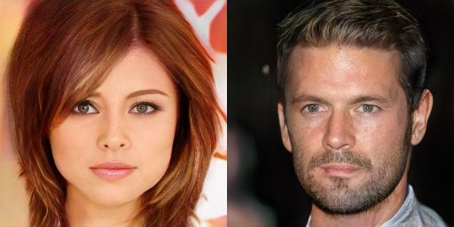

Multilevel GANs
Статьи:
- LapGAN: Deep Generative Image Models using a Laplacian Pyramid of Adversarial Networks. Denton et. al. 2015
- StackGAN: Text to Photo-realistic Image Synthesis with Stacked Generative Adversarial Networks. Zhang et. al. 2016
- SGAN: Stacked Generative Adversarial Networks. Huang et. al. 2016
- Progressive GAN: Progressive Growing of GANs for Improved Quality, Stability and Variation. Karras et. al. 2017
Мотивация
В последнее время GAN-ы очень активно развиваются, и с их помощью удается получать изображения высокого визуального качества. При этом их обучение как правило очень дорогое, также у них есть много проблем с нестабильностью и сложностью подбора параметров — из-за этого генерация изображений высокого разрешения представляет большую сложность.
Две крупные проблемы, которые возникают: 1) на изображениях получается непонятная ерунда (высокого качества) вместо осмысленных объектов, 2) тяжело подобрать архитектуру, которая не сломается совсем. При этом эксперименты показывают, что генерация изображений низкого разрешения получается вполне осмысленной и более или менее стабильной, отсюда возникает идея делать несколько “уровней” GAN-ов для разных степеней подробности изображений (формальнее см. ниже). Здесь мы рассмотрим 4 статьи, архитектуры которых по моему мнению подходят под эту идею; статьи расположены в хронологическом порядке, и последняя из них позволяет получать изображения высокого качества разрешением в 1 мегапиксель (!).
Архитектуры и примеры
На все архитектуры мы будем смотреть с высокого уровня абстракции, то есть не будем подробно разбираться в целевых функциях и методах оптимизации.
LapGAN (2015)
В этой статье предлагается разложить изображения в пирамиду Лапласа (Laplacian pyramid), а потом на каждом уровне обучить отдельный GAN. Опишем, что такое пирамида Лапласа.
Обозначим \(d(\cdot)\) — оператор, который размывает изображение и прореживает его пиксели через один, т.е. если на входе было изображение разрешения \(j \times j\), то на выходе будет изображение разрешения \(j/2 \times j/2\). Также введем оператор \(u(\cdot)\), который наоброт повышает разрешение изображения (каким-нибудь простым методом интерполяции), т.е. из изображения размера \(j \times j\) получается изображение размера \(2j \times 2j\).
Пусть \(I\) — входное изображение, для него сначала строится последовательность \([I_0, I_1, \ldots I_K]\), где \(I_0 = I, \; I_k = d(I_{k-1})\). Дальше берутся разности между уровнями, и получается пирамида Лапласа: \(h_k = I_k - u(I_{k+1})\) для \(k = 1, \ldots, K-1\), и \(h_K = I_K\). Смысл этой пирамиды такой: на уровне \(h_0\) находятся самые мелкие детали изображения (это разность между исходным изображением и его немного размытой версией), а далее на каждом уровне получаются все более общие детали, которые хранятся в меньшем разрешении. Вернуться обратно к исходному изображению можно по формуле: \(I_k = u(I_{k+1}) + h_k\).
Дальше все просто: 1) Преобразуем всю обучающую выборку в пирамиды, 2) Учим GAN на каждом уровне отдельно, 3) Генерируем пирамиды и из них обратно собираем изображения. На всех уровнях кроме первого обучается обусловленный GAN, который передает генератору не только шум, но и изображение с предыдущего уровня (дискриминатор тоже видит это изображение). Ниже картинки с архитектурой (плюс там можно посмотреть как выглядят уровни пирамиды).
Обучение:
Сэмплирование:
Эта архитектура позволяет подняться от разрешения ~32x32 до ~64x64, вот примеры сэмплов:
Можно обучать и в более высоком разрешении, но на картинках получается ерунда (но по крайней мере не происходит коллапса).
StackGAN и SGAN (2016)
В этих двух статьях авторы отталкивались от более прямолинейной идеи: а давайте мы сделаем GAN, который генерирует изображения низкого разрешения, а потом обучим еще один GAN, который принимает изображения низкого разрешения и генерирует изображения высокого разрешения. При желании можно добавлять больше уровней. Разберем их постановки задач и архитектуры поподробнее.
StackGAN
В этой статье рассматривается задача text-to-image, то есть они принимают на вход текст, делают из него эмбэдинг, и из него хотят генерировать картинки. Ниже архитектура, а потом комментарии к ней.
Комментарии:
- В предыдущем разделе мы обсуждали, что 64x64 тяжело обучать, и нужен LapGAN, а тут раз — и обучаем сразу 64x64, как так? На самом деле тут никакой магии нет: 1) визуальное качество получается низким, но это не страшно, главное чтобы были общие контуры, 2) стабильность достигается засчет наличия эмбедингов и Conditioning Augmentation (см. далее).
- Conditioning Augmentation — трюк для стабилизации обучения на эмбэдингах текста (которые могут находиться очень далеко друг от друга в пространстве всех эмбэдингов). Идея состоит в том, чтобы из эмбединга получать среднее и дисперсию распределения, а потом из него сэмплировать. Таким образом один и тот же обучающий объект может порождать немного разные обуславливающие вектора.
Сгенерированные примеры получаются хорошие, причем в разрешении уже 256x256. Ниже примеры, с результатами после первого GAN-а и после обоих, результат первого искусственно увеличен для удобства сравнения.

SGAN
В этой статье результаты получились почему-то похуже, возможно дело в том, что рассматривалась исходная задача без входной информации. Архитектура тут значительно сложнее, а итоговые сэмплы разрешением не выше 32x32 (правда по куче метрик лучше всех классических GAN-ов).
Опишем в общих чертах архитектуру:
- Берется обычная сеть для классификации и из нее извлекаются представления через каждые \(K\) слоев (она дальше называется энкодером).
- Обучаем генераторы принимать эти представления и генерировать предыдущие представления (т.е. как бы обращаем процесс, получаем декодер).
- При обучении используется взвешенная сумма кучи функций потерь: 1) качество дискриминатора, 2) качество реконструкции энкодер-декодер, 3) нижняя оценка на энтропию распределения генератора при фиксированном представлении (это чтобы шум не игнорировался).
Можно полюбоваться на архитектуру, но подробно разбираться не будем:
Как было сказано выше, примеры там в низком разрешении, поэтому их здесь не приводим (визуально непонятно, хорошие они или нет).
ProgressiveGAN (2017)
В этой статье основная идея заключается в том, чтобы сначала обучать GAN для генерации изображения маленького разрешения (они стартуют с 4x4), а потом постепенно добавлять в него новые слои, которые увеличивают разрешение выходной картинки. Удобнее это смотреть на схеме:

Дискриминатор и генератор все время являются зеркальным отражением друг друга. После добавления новых слоев старые слои не замораживаются, но для того, чтобы новые слои (с изначально случайными весами) не ломали старые, они добавляются постепенно. То есть на выходе используется \(\alpha \cdot\)(результат нового слоя)$ + (1-)$(увеличенный старый результат), где \(\alpha\) плавно меняется от 0 до 1:
Дальше к этой схеме добавляется несколько трюков, это все обучается 20 дней на NVIDIA Tesla P100 GPU, и получаются вот такие результаты на датасете фотографий знаменитостей (это самые удачные примеры):

У них есть еще много крутых примеров, их можно посмотреть в статье или в видео.
Резюме
В целом такие многоуровневые GAN-ы можно рассматривать как форму регуляризации, которая тем не менее позволяет упрощать обучение и получать очень впечатляющие результаты. Хотя обычные GAN-ы тоже удается обучить для разрешения в 1 мегапиксель (например, тут), ProgressiveGAN дает самые качественные из известных на данный момент результатов.